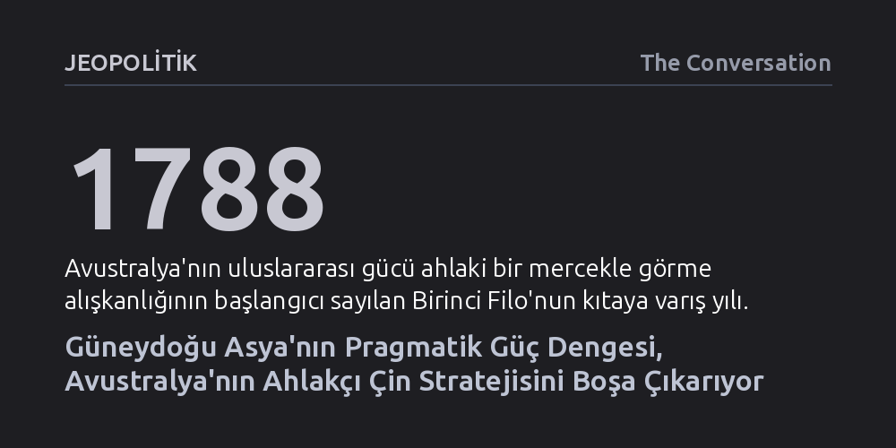

JEOPOLITIK · The Conversation · 2026-10-19
Avustralya Çin'i çevrelemek için ABD ile askeri blok kurarken, Güneydoğu Asya ülkeleri tarafsız kalıp risk dağıtmayı seçiyor. Bölgedeki komşuların gücü ahlaki değil pragmatik görmesi, Avustralya'nın geleneksel dünya düzeni varsayımlarını kökünden sarsıyor.
Yükselen bir güce karşı küçük devletlerin ya boyun eğmek ya da karşı blok kurmak zorunda olduğu ezberini yıkarak, çok kutuplu dünyada tarafsız kalarak manevra yapmanın mümkün olduğunu gösteriyor.

Son yıllarda Avustralya yönetimi, Çin'in Pasifik ve Güneydoğu Asya'daki nüfuz arayışını varoluşsal bir tehdit olarak algılayıp alarma geçti. Yabancı müdahale yasalarını sertleştirdi, üniversitelerin sınır ötesi işbirliklerini sıkı denetim altına aldı ve yabancı yatırımlara katı kısıtlamalar getirdi. Güvenlik mimarisini ise neredeyse tamamen ABD eksenine sabitleyerek AUKUS ve Quad gibi paktlarla Pekin'i çevreleme stratejisine dört elle sarıldı. Kanberra'daki karar vericilerin temel varsayımı şuydu: Çin'in gölgesini en yakından hisseden Güneydoğu Asya ülkeleri de vakit kaybetmeden bu dengeleyici koalisyonun safına katılacaktı.
Fakat Avustralya'nın en yakın komşularında bambaşka bir gerçeklik hüküm sürüyor. Bölgedeki kamuoyu yoklamaları ve saha araştırmaları, halkların Çin'in niyetlerine kuşkuyla baktığını açıkça gösterse de, hiçbir Güneydoğu Asya hükümeti Çin karşıtı bir bloğun parçası olmaya yanaşmıyor. Uluslararası ilişkiler teorisinin geleneksel realist kabulü olan 'yükselen tehdide karşı zayıf devletler ya boyun eğer ya da karşı ittifak kurar' kuralı, Güneydoğu Asya'nın esnek diplomasisi karşısında bütünüyle iflas etmiş durumda.
Bu stratejik ayrışmanın kökeninde iki tarafın dünyaya baktığı zihinsel pencerelerin taban tabana zıt oluşu yatıyor. Avustralya, 1788'de ilk İngiliz filosunun kıtaya varışından bu yana uluslararası gücü daima ahlaki bir mercekle değerlendirdi. Kanberra için Anglo-Sakson müttefiklerin elindeki güç doğası gereği erdemli ve koruyucu; bu değerleri paylaşmayan devletlerin gücü ise tehlikeli ve gayrimeşrudur. Bu sarsılmaz inanç öylesine derindir ki Avustralya; Sırbistan'ın bombalanmasından Irak ve Libya işgallerine kadar uluslararası hukuku zedeleyen krizlerde dahi Washington'ın arkasında durdu. Zira Amerikan hegemonyasının uzun vadeli bekası, anlık adımların ahlaki meşruiyetinden üstün tutuldu.
Güneydoğu Asya ülkeleri içinse güç ahlaki bir dava değil, sadece yönetilmesi gereken çıplak bir olgudur. Sömürgecilik boyunduruğundan kurtulup sancılı ulus inşası süreçlerinden geçen bu toplumlar, soyut felsefi ilkeler yerine sonuç getiren pragmatik çözümlere tutunmak zorunda kaldı. İkinci Dünya Savaşı sonrasında Batı'nın kurduğu uluslararası düzenden ekonomik olarak faydalansalar da, bu düzeni kendilerini sömürgeleştirenlerin inşa ettiğini hiç unutmadılar. Bu yüzden Batı'nın insan hakları veya serbest piyasa ilkeleri adı altında getirdiği dayatmaları ahlaki bir önderlikten ziyade ikiyüzlülük olarak görüyorlar.
Güneydoğu Asya devletleri, Pekin'e teslim olmakla ona karşı cephe almak arasına sıkışmayı reddederek risk dengeleme (hedging) stratejisini hayata geçiriyor. Bir yandan en büyük ticaret ortakları olan Çin ile ekonomik bağlarını derinleştirirken, diğer yandan ABD, Japonya, Hindistan ve Rusya ile diplomatik ve güvenlik kanallarını çeşitlendiriyorlar. Onların perspektifinden bölgesel istikrara yönelik asıl tehdit tek tek güçlerin kendisi değil, büyük güçler arasındaki doğrudan bir çatışmanın yaratacağı yıkımdır.
Bu pragmatik tutum, bölgenin Ukrayna savaşında takındığı mesafeli tavrı ve Rusya ile süren ilişkilerini de anlaşılır kılıyor. Nitekim Endonezya Devlet Başkanı Prabowo Subianto'nun Vladivostok'taki ekonomik forumda ülkesini açıkça Rusya'nın bölgeye açılan kapısı olarak sunması bu zihniyetin bir sonucudur. Güneydoğu Asya başkentleri gücün kimin elinde olduğuna değil, nasıl kullanıldığına bakıyor; mevcut tabloda Beyaz Saray'ın kural tanımaz savrulmalarını en az Pekin kadar düzen bozucu bir risk unsuru olarak değerlendiriyorlar.
Avustralya bugün kendisini coğrafi olarak Güneydoğu Asya'nın hemen yanı başında, ancak zihinsel olarak Londra ve Washington'ın dar parantezinde sıkışmış halde buluyor. Diplomatların dillerinden düşürmediği 'benzer zihniyetteki ülkeler' söylemi, Avustralya'nın komşularını anlamasını engelleyen yapısal bir kör noktaya dönüştü. Komşuları mevcut uluslararası sistemin tamamen çökmesini arzulamasa da, Batı merkezli dayatmalara karşı Küresel Güney ekseninde alternatif dayanışma zeminleri kurmayı hızla sürdürüyor.
Dünyanın hızla çok kutuplu bir evreye girdiği günümüzde asıl soru şudur: Avustralya iki asırdır sırtını yasladığı eski dünya düzenini savunma takıntısından sıyrılıp, kuzey komşularının esnek ve pragmatik güç anlayışından ders çıkarabilecek mi? Bir devletin kökleşmiş stratejik algısını değiştirmesi son derece sancılıdır; fakat bunu başaramamak, Avustralya'yı kendi coğrafyasında yalnızlaşan bir garnizona dönüştürme riski taşımaktadır.